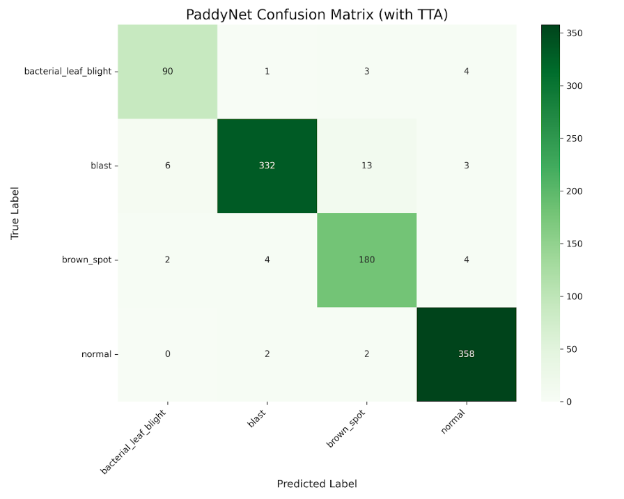

Overview
Scans–
With disease–
Phones sharing–different app installs
Areas reporting–
Outbreak alerts–last 14 days
Results by disease
Latest scans
Scans per week
Areas with the most disease
Based on the farm or area name farmers typed in their Profile.
| Area | Scans | With disease | Most common disease |
|---|
Reports on the map
Only scans with location are shown (farmers who turned on location). Locations are rounded to about 100 m. Dashed circles are outbreak alerts (1 km).
Possible outbreaks
An alert shows when at least 3 scans of the same disease are within 1 km of each other in the last 14 days. It is an early warning to check the field, not a confirmed outbreak.
| Disease | Area | Scans | First seen | Last seen |
|---|
No outbreak alerts right now.
All shared scans
| Date | Result | Confidence | Area | Location | TTA | App |
|---|
AI model in the app
Confusion matrix (test set, with TTA)

Copy confusion_matrix_tta.png from your Drive (PaddyNet-Project/models) into the dashboard's assets folder to show it here.
How the model does in the field
From shared scans in the chosen period. There is no "correct answer" for field photos, so these show confidence, not accuracy.
System
App versions in use
| App version | Phones | Scans | Last scan |
|---|
Model versions
| Version | Test acc. | With TTA | Scans | Status |
|---|